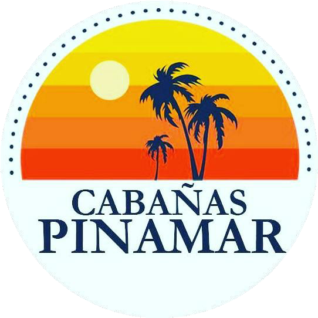

El botón principal «Ver Disponibilidad» en el Hero, dentro de la guía paso a paso y dentro de cada cabaña lleva directamente al motor oficial de reservas en línea con disponibilidad y pago inmediato.
Presenta las 6 unidades reales (Individual, Suite 4 pax y Cabañas de 4, 5, 6 y 7 personas) con su metraje, carrusel de fotos interior y lista de equipamiento incluido.
Al elegir una cabaña y completar Nombre, Fechas y Personas, abre el WhatsApp de recepción (+56 9 7463 5702) con el mensaje listo para consultar disponibilidad.
Explica de forma desplegable los 6 pasos de HotelSync y los 3 pasos de WhatsApp (1. Rellenar formulario · 2. Consulta por disponibilidad · 3. Coordina el pago).
Muestra la calificación oficial en Google Maps (4,4 ★ · 320+ opiniones · 9,7 en Limpieza), 3 testimonios verificados, botón a la ficha de Google y soporte para Google Places API v1.
Conmutador en vivo entre Mapa 2D, Street View 360° de la fachada y Vista Satélite, calculador de ruta en 1 clic (Faro, Terminal, Estadio, Aeropuerto) y botones directos a Google Maps y Waze.
• Diseño Responsivo Inteligente: En teléfonos móviles se oculta automáticamente la imagen lateral secundaria del Hero para priorizar el título y el botón de reserva sin necesidad de hacer scroll extra.
• Métricas y 8 Servicios: Destaca +25 años de trayectoria, 9,7 en limpieza, 21 cabañas, recepción 24 hrs, desayuno incluido, estacionamiento privado, Wi-Fi, juegos, terraza común nueva y política 100% Pet Friendly.
| Propuesta | Concepto Visual | Tipografía |
|---|---|---|
| 1. Clásico (main) | Estética de Hotel Boutique tradicional en Azul Marino (#0a1f35), Dorado (#d49a2a) y bordes rectos. |
Playfair Display + Lato |
| 2. Editorial Minimalista | Diseño tipo revista de viajes, composición asimétrica, servicios en lista abierta y sombras suaves. | Lora + Lato |
| 3. Retro-Sunset | Inspirada en las 5 franjas de atardecer y el marco punteado del logo oficial sobre fondo hielo costero. | Playfair Display + Plus Jakarta Sans |
| 4. Gradiente Continuo | Lienzo continuo con el atardecer difuminado en el fondo y tarjetas en blanco puro sólido de alto contraste. | Playfair Display + Plus Jakarta Sans |
| 5. Costero Orgánico (Bento) | Twist Contemporáneo: Tarjetas curvas (rounded-3xl), botones cápsula, Navbar flotante y Hero Dark-Luxe en Azul Pacífico Profundo. |
Fraunces + Plus Jakarta Sans |